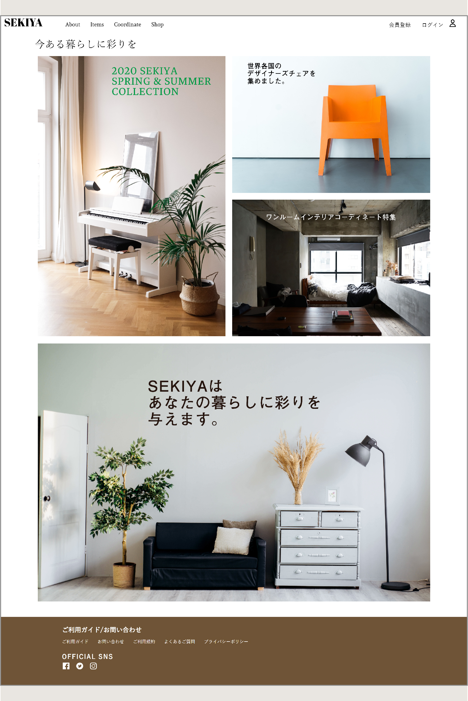

家具屋サイト

『SEKIYA』という架空の家具屋のサイトです。
グリッドレイアウトでコンテンツを整列して統一感を出し、
清潔感のあるサイトに仕上げました。
目を惹きつけさせたいコンテンツ画像の邪魔をしないために、
見出しを短くし、文字色を見やすいけれども控え目な色を
選びました。
実際のサイト
使用ソフトウェア:Illustlater/サクラエディタ
使用言語:HTML/CSS
作品一覧に戻る